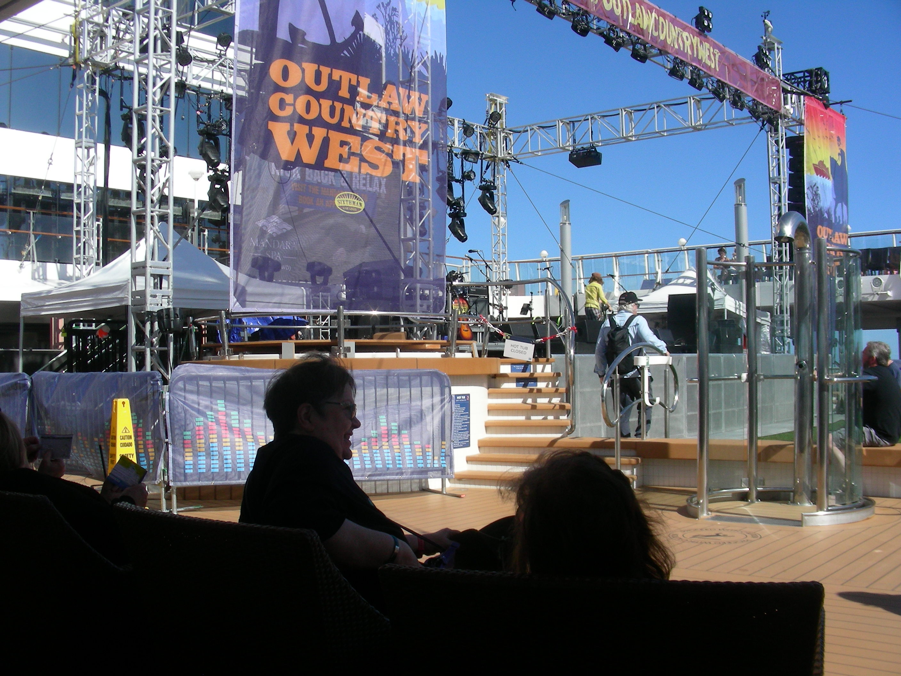
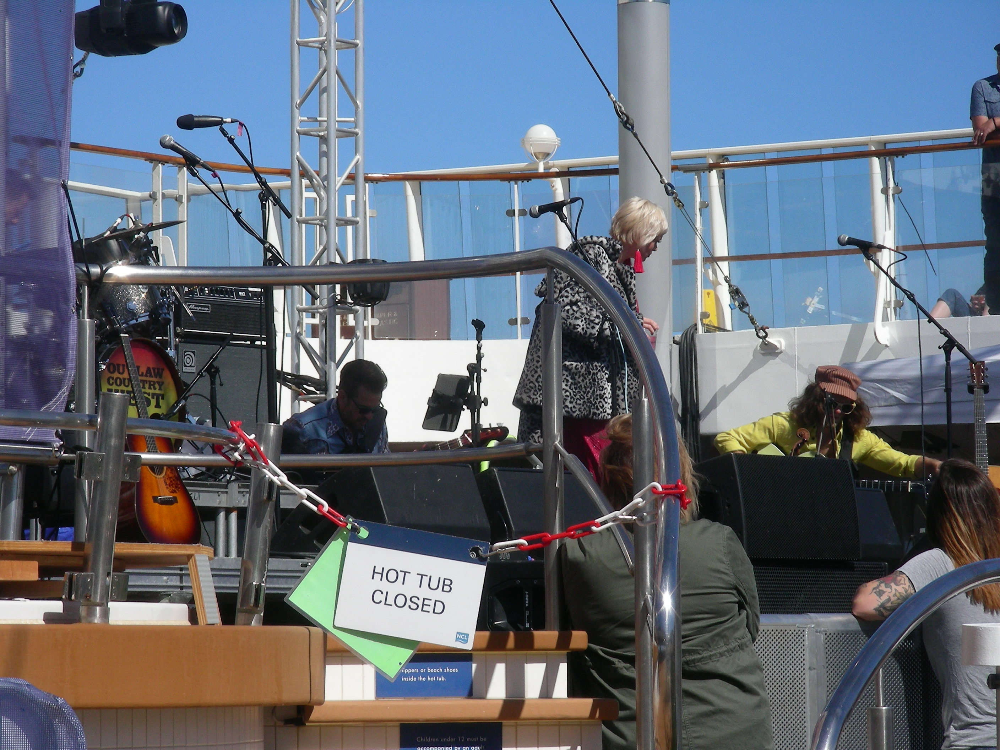
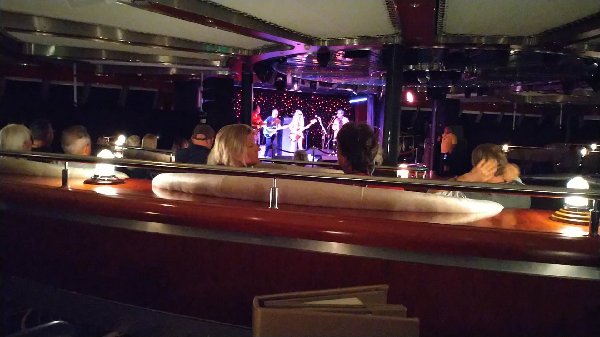
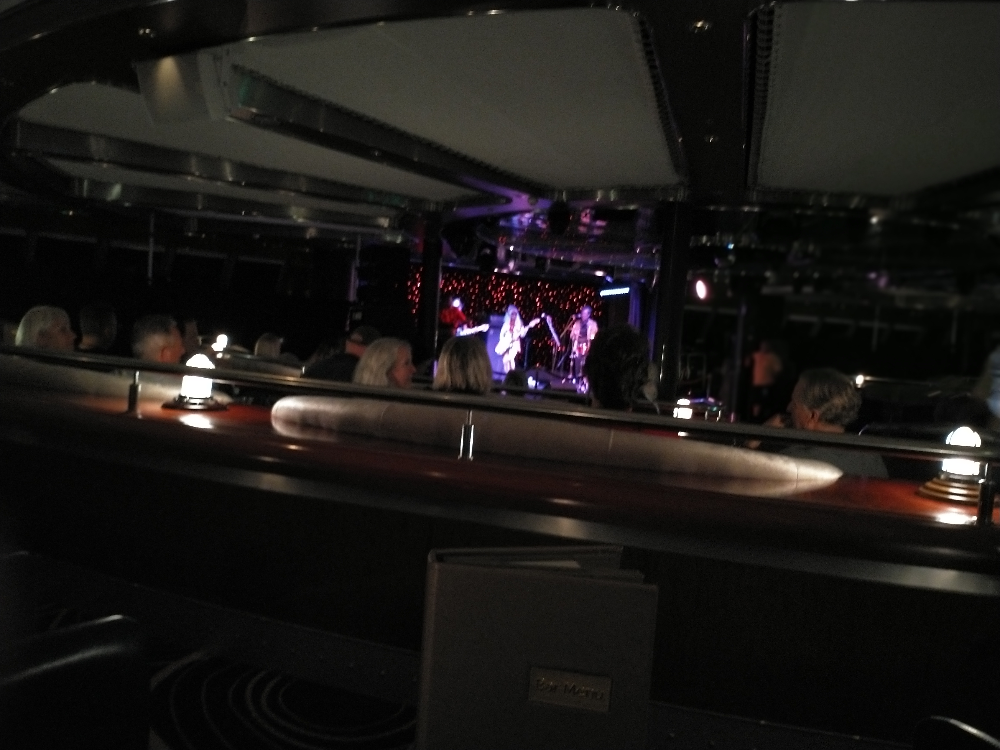
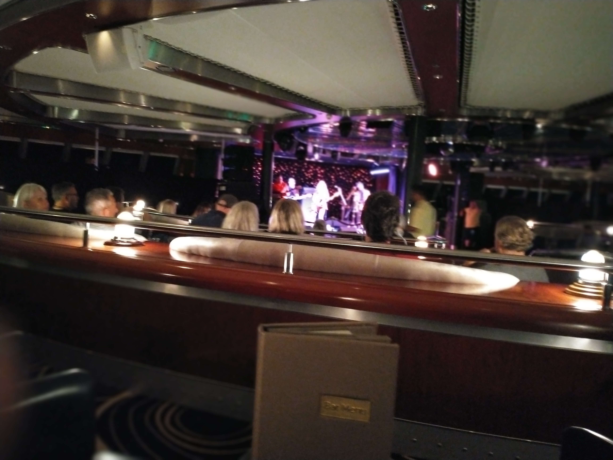
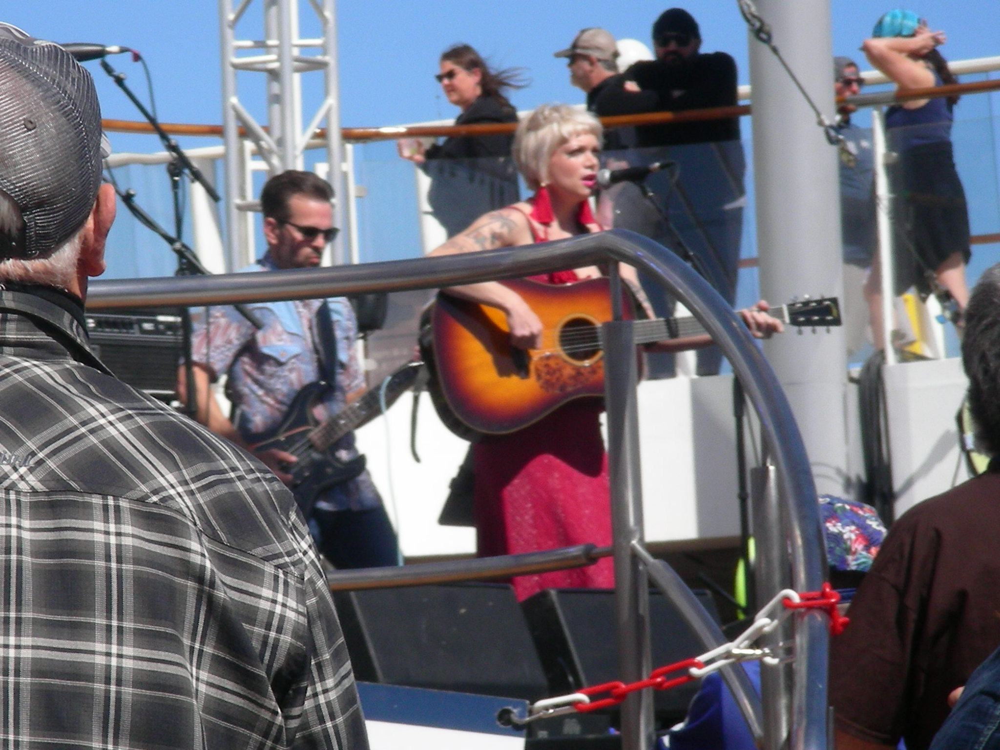
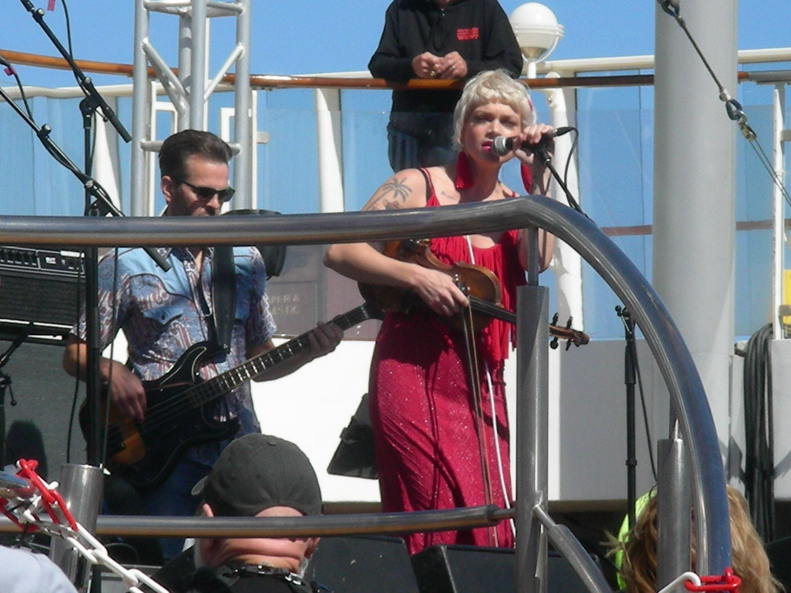

Day 12 – 17 Nov 3 to Nov 8
Outlaw Country Cruise Norweigan Jewel Room 10520
T'Sars Palace
O'Sheehans Bar & Grill
Garden Cafe -buffett
Marlin Fishing in Cabo
Bands
Bon Voyage
We had no trouble parking. As we walked toward the Norwegian Jewel, a couple of nice guys took our luggage, showed us where to board. We boarded, got checked in and found our room with no problem. We were looking forward to 5 days of excellent music and food.
Outlaw Country West
SiriusXM Satellite Radio Station “Outlaw Country” hosts this cruise. If you’re not familiar with the format and music you can check it out for yourself or just see our Intro.
Prior to our “66 On Route66” adventure we put together an Itinerary of the shows we would attempt to see. We figured that it was just a start and we could improvise as we liked; which we did.
We saw a lot of shows and they were all great. If you’re into this type of music this is an excellent cruise package. They have several venues, from a theater setting, clubs, and a big stage on the Aft deck(which was our favorite). Our favorite place to eat was on the Aft deck(our room was toward the front of the ship), which was a smorgasbord/cafeteria of any type of food and drink imaginable. When going back and forth from this cafeteria, you passed the big concert stage. A lot of times after we ate we would just sit by the stage and watch the bands set up and then perform. Plus, everyone was so nice. It was awesome! Note: The lady in the red dress is Lillie Mae. She, along with her band are very, very talented and their music is fantastic. (I bought her CD). Check them out. All the bands and artists were wonderful. I just didn’t take that many pictures.
There is a type of a general store, midship, that has all the bands merchandise for sale in one area. Very cool stuff. It was fun to look around and buy some stuff.
C       ontinue On Down The Road